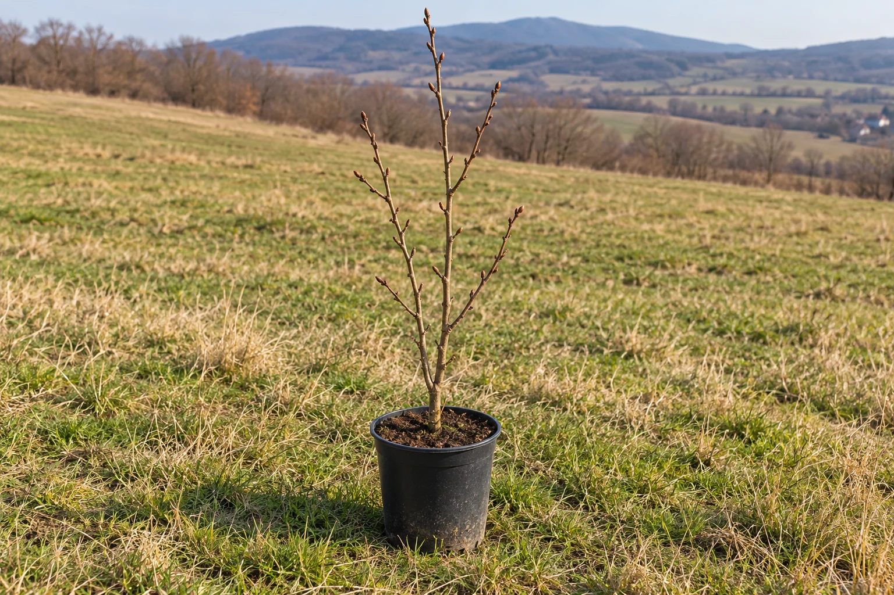

A SMALL BEGINNING
1 year
One-year-old hazelnut plants
A young plant with a slender stem and a compact root system.
Price per plant€1.00
Plant typeBare-root
FROM THE HEART OF BULGARIA.
Caring for every root.
Elit Komers 95 Ltd. — over 20 years of experience growing hazelnut nursery plants and more than 1 million hazelnut plants sold. From our nursery in Turia, Pavel Banya municipality, to your garden.
Explore our plants ↓Select a photo to view · Click the large photo to enlarge it
OUR NURSERY
At Elit Komers 95 Ltd., we grow hazelnut nursery plants and orchards of selected varieties across more than 63 hectares of farmland. With over 20 years of experience, we help our customers choose suitable plants for their gardens or farms. We grow organically, caring for our plants, the soil and nature.
01 / VARIETIES
Select a variety to explore its characteristics and suitable pollinizer varieties.
02 / CATALOGUE
Hazelnut saplings and young hazel trees direct from the grower — bare-root and container-grown.
Contact us for availability and help choosing a variety.
We dispatch orders of 10 to 100,000 hazelnut plants.
Minimum order: 10 plants · Maximum order: 100,000 plants
A SMALL BEGINNING
A young plant with a slender stem and a compact root system.
THE NEXT STEP
A nursery plant with a more developed stem and established side branches.

A MORE DEVELOPED PLANT
A larger plant with more branches and a more developed root system.

CONTAINER-GROWN
A hazelnut plant grown in a container with potting substrate.
Images are illustrative. Each plant has its own size and shape.
Turia Hazelnut Nursery is in Turia village, Pavel Banya municipality, Bulgaria. Elit Komers 95 Ltd. has over 20 years of experience producing hazelnut nursery plants.
One-year-old plants cost €1 each, two-year-old plants €1.50 and three-year-old plants €2.50. Container-grown hazelnut plants are priced on request. Please contact us for availability.
We accept orders of 10 to 100,000 hazelnut plants. For nursery plant purchases and larger quantities, please confirm the variety, age and availability with us.
We offer Tombul, Bademoviden, Ran Trapezundski and Rimski. The Varieties section describes the nuts, growth habits and suitable pollinizer varieties.
The catalogue includes hazelnut plants in containers with substrate. Prices are available on request; contact us to confirm the variety and availability.
03 / CONTACT
For help choosing a variety, availability and plant details, please call or email us.
+359 898 473 251+359 877 632 338elit.komers95@abv.bg ↗Monday – Friday 10:00 – 19:00
Saturday 10:00 – 14:00
Sunday Closed